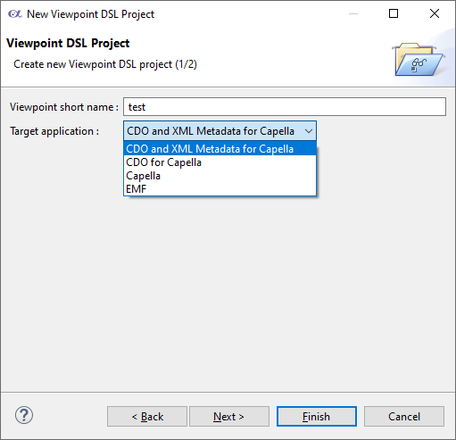
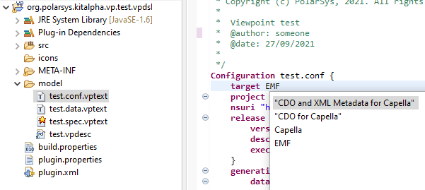

Generate viewpoints for CDO platforms including metadata descriptions as XML content
The support for CDO platform is the same as the one provided by the CDO generation.
It adds the generation of a [viewpoint_name].connector plugin containing XXX.data.vptext data content description using XML format.
Prerequisite
One of the generated bundles is specific to the CDO platforms. Thus, it requires the bundle org.eclipse.emf.cdo which is not available into Capella Studio.
A new target platform is needed. To configure it:- Open the preference page
Menu Window > Plug-in development > Target platform. - Click on the Add... button. Then on the wizard press the Next button.
- Click on the Add button and select the installation item and press the Next button.
- Provide the path of your CDO platform and click on Finish button.
Setup new viewpoint
To enable it into a new project, select the target application labeled CDO and XML Metadata for Capella.

Setup existing viewpoint
To enable it into an existing project, open the XXX.conf.vptext file and use the content assistant to select the target application labeled CDO and XML Metadata for Capella.
